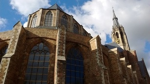
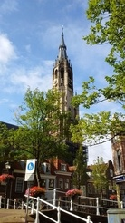

پیادهروی در دلفت-شش آگوست دوهزار و پانزده

هوای تازه و خنک اول صبح و یک کوچه خلوت. قدمزدنهای اول صبح حال خوشی به آدم میدهد. خصوصاَ در این فصل که مدارس تعطیلند و کوچهها خلوت و خالی.
هوای تازه و خنک اول صبح و یک کوچه خلوت. قدمزدنهای اول صبح حال خوشی به آدم میدهد. خصوصاَ در این فصل که مدارس تعطیلند و کوچهها خلوت و خالی.

این بخش از کلیسا مدتها در دست تعمیر بود. بالاخره داربستها را برداشتند. این عکس را در حد وسع دوربین موبایل گرفتم. برای عکس بهتر یا باید یک لنز بازتر داشته باشم یا چند ردیف از مغازهها و خانههای مزاحم را خراب کنم.

اولین عکس وبلاگ را در یک صبح سرد و مهگرفته زمستانی تقریباَ از همین زاویه گرفتم. این بالایی را گرفتم برای مقایسه.

کانال پوشیده از جلبک. فکر کنم از روی این پل قبلاَ هم عکس گذاشته بودم. دارم آرامآرام تکراری میشوم.